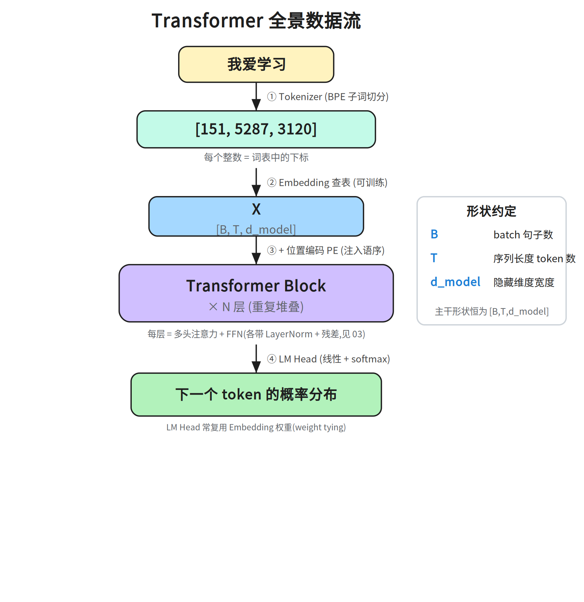
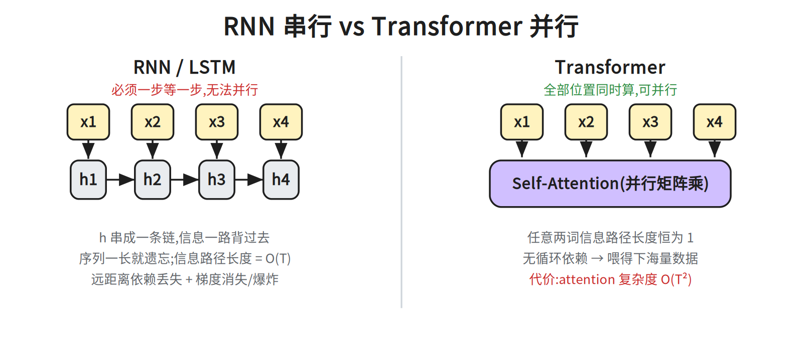
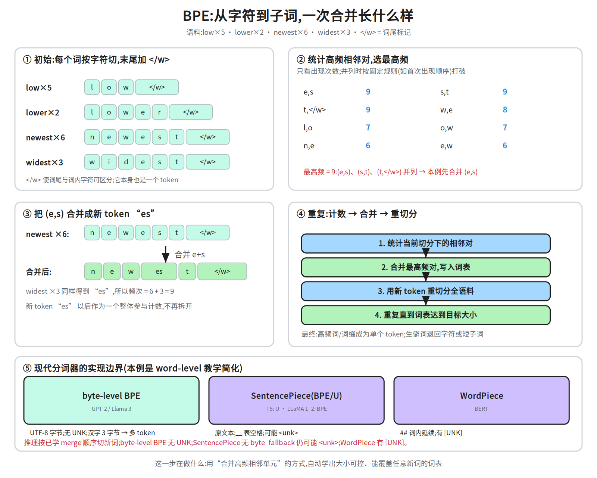
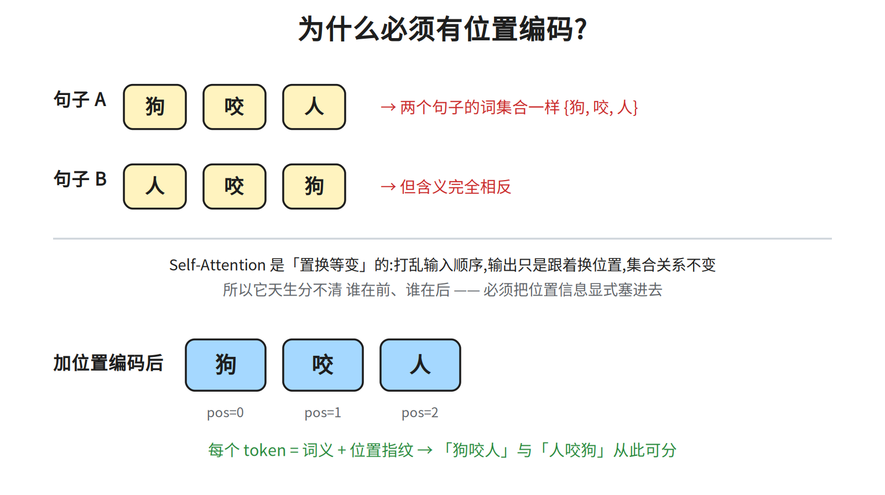
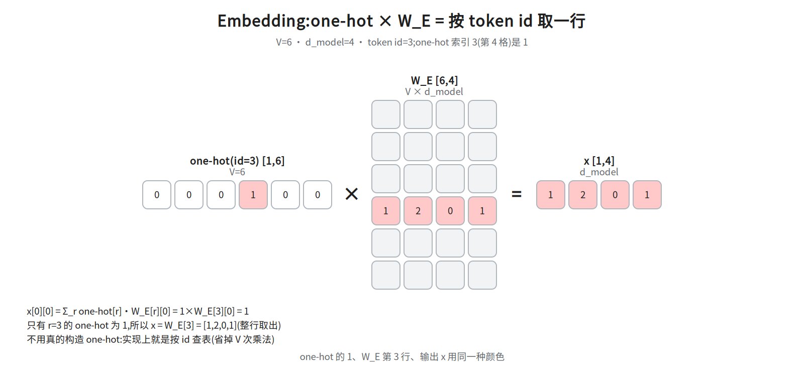
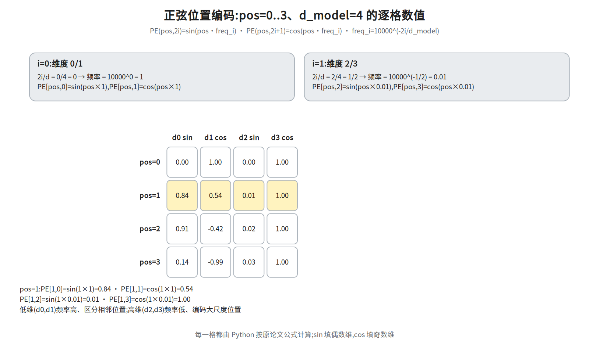
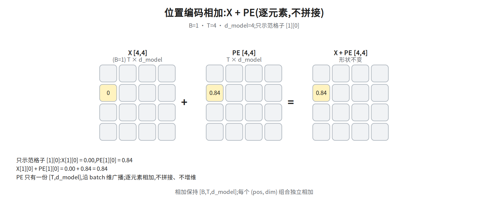

第一层 · 骨架 —— 从文本到矩阵¶
本层回答:一句话到底是怎么变成一堆数字(张量)送进模型的。
0. 依赖图(学习顺序)¶
根节点是可以无条件接受的事实;箭头表示「前者支撑后者」。学习顺序 = 从根到汇点的拓扑序。 Obsidian 手机端可直接渲染下图。
graph TD
R["RNN 的致命伤:串行 + 长距离依赖衰减(§1)"] --> S["Transformer:可并行 + 短路径(§1)"]
A["文本是离散符号(根事实:神经网络只认数字,不依赖 Transformer)"] --> B["Tokenizer<br/>文本 → token id"]
B --> C["Embedding<br/>id → 向量"]
D["语序改变语义"] --> E["必须注入位置信息"]
F["Self-Attention 对输入顺序置换等变<br/>(第二层展开)"] --> E
E --> G["位置编码"]
C --> H["X: [B, T, d_model]"]
G --> H
N["§2 维度记号:B / T / d_model(§4、§5.5 全靠它)"] --> H
H --> I["进入 Transformer Block"]全景¶

1. 为什么需要 Transformer¶
前一代主力 RNN/LSTM 的致命伤有两条:串行——第 t 步必须等第 t-1 步,无法并行;以及长距离依赖丢失——信息靠 h 一路"背"过去,序列一长就衰减,反向传播时梯度也会消失/爆炸(RNN 的经典病症)。

Transformer 的两个核心收益(面试直接能用):
- 可并行:没有循环依赖,整句一次矩阵乘搞定 → 能吃海量数据。
- 短路径:这里的“路径长度”指计算图上两个位置之间要经过的边数——RNN 需沿
h逐步传O(T)步,Transformer 任意两个位置都只隔一次 attention,恒为 1 步,长距离依赖不再衰减。
代价:attention 对序列长度 T 是 O(T²),这是长上下文研究的根源。
2. 维度记号(全程统一)¶
| 记号 | 含义 | 例 |
|---|---|---|
B |
batch size | 2 |
T |
序列长度(token 数) | 5 |
d_model |
隐藏维度 | 512 / 768 / 4096 |
主干形状恒为 [B, T, d_model] —— 后面每个部件都是在这个形状上做手术。
3. token → id(tokenizer)¶
神经网络只认数字,先把文本切成 token(BPE / SentencePiece)再映射成整数 id。
上例 4 个汉字只出 3 个 id,说明有两个相邻字被合并成了一个 token(具体哪两个取决于分词器与词表)。
BPE 要点:从字符开始,按频率反复合并高频相邻对。最小示例:
初始(按字符切): l o w e r </w> ← 语料里 "lower" 只出现 2 次(低频,会被拆开)
统计相邻对频次: (l,o) (o,w) (w,e) (e,r) (r,</w>) …
合并最高频的一对,比如 (e,r) → "er"(只为演示合并语法,合并顺序与下文真实语料无关):
l o w er </w> ← 只合并了 (e,r),</w> 仍是独立符号
再合并 (er,</w>) → "er</w>"(原文漏写的这一步):
l o w er</w>
再合并 (l,o) → "lo",再 (lo,w) → "low":
low er</w>
最终"lower" 可能切成 ["low", "er</w>"] 两个 token(低频词,未合并到整词);更低频的生僻词则拆到字符级。
注意:上面的 (e,r) 不是真实语料的首轮选择——下文小语料里 (e,r) 只出现 2 次,首轮 9 次并列的是 (e,s)/(s,t)/(t,</w>)。
这样常见词占一个 token、生僻词拆成子词,词表规模可控,又能表示任意新词。

图里用一个小语料(low×5 · lower×2 · newest×6 · widest×3)走一遍真实机制:
- 先按字符切,并在词尾加
</w>(词边界标记)。如果没有它,词尾的w和词内的w无法区分,词尾位置也就丢失了。 - 统计所有相邻对的频次:例如
(e,s)出现在newest的 6 份和widest的 3 份里,共 9 次。 - 合并最高频的一对(注意:本例
(e,s)、(s,t)、(t,</w>)各 9 次并列,按实现规则取(e,s))成一个新 token:(e,s) → es,于是n e w e s t </w>变成n e w es t </w>。 - 重切分、重复:新 token
es以后作为一个整体参与下一轮计数,直到词表达到目标大小。
并列时怎么选?各实现规则不同(有的按首次出现,有的按字典序);具体顺序不影响核心机制,核心始终是"数频次 → 合并最高频 → 更新切分"。推理时不再统计新语料,而是按训练好的合并规则顺序应用。
3.1 现代分词器的三个边界(面试常追问)¶
上图是 word-level BPE 的教学简化。真实模型常见三种实现:
| 实现 | 代表 | 单位 | 未登录词(OOV) | 中文/多语 |
|---|---|---|---|---|
| byte-level BPE | GPT-2 / Llama 3 | UTF-8 字节 | 无 UNK:任何字符都能用字节表示 | 常用汉字占 3 字节(生僻字 4);但「→ 多个 token」只是 GPT-2 级约 50k 词表的结论,128k 词表(如 Llama 3)里大量常用汉字本身就是单 token(此格无来源,勿当 byte-level BPE 通则) |
| SentencePiece(BPE / Unigram) | T5(Unigram)、LLaMA 1–2(BPE) | 原文本(空格记 ▁) |
通常可回退到字符/字节(需 byte_fallback);否则仍可能 <unk> |
直接在多语文本上训练,覆盖更好 |
| WordPiece | BERT | 子词(## 表词内延续) |
仍有 [UNK] |
英文中心,中文常被切碎 |
词表大小的取舍(面试很爱问):
- 词表大 → 同样文本 token 数少、序列短、训练/推理省;但 embedding 与 LM Head 是
V × d_model,参数和显存变大。 - 词表小 → 参数省,但序列变长、注意力
O(T²)更贵;低频子词欠训练。 - 还要预留 special token(
<bos>、<eos>、<pad>、角色标记等),它们也占词表。
推理时遇到新词:不是"查不到就失败",而是按训练好的 merge 顺序把新词切成已知子词/字节。byte-level BPE 无 UNK;SentencePiece 通常能回退到字符/字节(需 byte_fallback 等配置),否则仍可能出 <unk>;WordPiece 则可能有 [UNK](是否出现取决于是否切到未登录字符)。
4. Embedding:id → 向量¶
import torch, torch.nn as nn
B, T = 2, 5
vocab_size, d_model = 30000, 512
tok_emb = nn.Embedding(vocab_size, d_model) # 本质 [vocab_size, d_model] 的可训练矩阵
ids = torch.randint(0, vocab_size, (B, T)) # [B, T]
x = tok_emb(ids) # [B, T, d_model]
关键:nn.Embedding 等价于「对 id 做 one-hot(长度 vocab_size),再乘那个大矩阵」,实现上直接取第 id 行,省掉 one-hot 的浪费。它是可学习参数,训练后语义相近的词向量会靠近。
参数量体感(高频追问):嵌入层参数 =
vocab_size × d_model。典型vocab=50000, d_model=768→ 约 3800 万,往往占小模型参数量的一大块。这也是为什么大模型常用权重共享:让最后的 LM Head 复用这个矩阵,省掉一份vocab × d_model。
5. 位置编码(本层重点)¶
为什么不能省¶
self-attention 对输入是置换等变的:把输入的向量打乱顺序,输出只是跟着换位置,集合内部关系不变。

所以必须显式注入位置信息。
术语澄清(两个词挨着容易混):置换等变(equivariant) = 打乱输入,输出只跟着同样地打乱(内部关系不变);置换不变(invariant) = 输出完全不受打乱影响。注意力是等变——它照样"能算",但它不知道谁在前谁在后,语序信息在它眼里丢失了。所以缺的不是"能力",是"顺序信息"。
怎么做(原论文:正弦位置编码)¶
def positional_encoding(T, d_model):
pos = torch.arange(T).unsqueeze(1).float() # [T, 1]
i = torch.arange(0, d_model, 2).float() # [d_model/2]
div = torch.pow(10000.0, i / d_model)
pe = torch.zeros(T, d_model)
pe[:, 0::2] = torch.sin(pos / div)
pe[:, 1::2] = torch.cos(pos / div)
return pe # [T, d_model]
x = tok_emb(ids) + positional_encoding(T, d_model) # 相加,广播到 [B, T, d_model]
直觉:每个位置叠一串不同频率的正弦波当"指纹"。低维频率高、区分相邻位置;高维频率低、编码大尺度位置。
三个必须知道的设计点¶
- 相加,不是拼接:不增维、不增计算;值域有界
[-1,1]数值稳。论文只给了「位置编码与嵌入同为d_model,故可相加」,并未论证拼接更差;sin/cos 的「可分离」是公式自身性质、拼接也保留,不能算作相加更优的理由。 - 为什么用 sin/cos:
PE(pos+k)可写成PE(pos)的固定线性变换 → 论文只是假设(§3.5:We hypothesize)这能让模型易学"相隔 k 位"这种相对关系(并未证明);无参数;理论上可外推更长序列。 (补充:原论文其实也试了可学习位置编码,二者效果"几乎相同"(nearly identical);选正弦是为了可能的外推能力,而非它明显更优。) ⚠️ 别夸大成"能外推现在就能用":正弦 PE 的实际外推效果有限——训练长度之外性能会掉,后来针对外推的补救是位置插值一族(PI/NTK/YaRN,第五层)。RoPE 的出发点与此不同:它让位置信息显式进入 Q/K 的旋转、天然携带相对位置(本讲义 §5 表格也如此描述),并非为修正弦 PE 的外推掉点而提出。所以"理论上可外推"不等于"实践已经解决长序列"。 - 现代演进(第五层展开):
| 方案 | 代表 | 做法 |
|---|---|---|
| 可学习位置编码 | GPT / BERT | nn.Embedding(T_max, d_model),简单、外推差 |
| RoPE | LLaMA 系(主流) | 在 attention 里对 Q、K 做旋转,天然编码相对位置 |
| ALiBi | Bloom 等 | 直接给 attention 分数加随距离递减的偏置,零参数 |
5.5 数值演算:Embedding 与位置编码¶
① Embedding:id → one-hot × W_E → 一行向量¶
取 V=6, d_model=4, token id=3。one-hot 只在索引 3(第 4 格)为 1:
[0,0,0,1,0,0]。乘 W_E [6,4] 后,结果就是 W_E 的第 3 行:

关键:one-hot 的 1、W_E 第 3 行、输出 x 用同一种颜色——实现里根本不用构造 one-hot,
直接按 id 查表即可。
② 正弦位置编码:pos=0..3、d_model=4¶
按原论文公式逐格计算:
j=0(维度 0/1):除数10000^(2j/d_model)=10000^0=1,角度 =pos/1 = pos。j=1(维度 2/3):除数10000^(2j/d_model)=10000^(1/2)=100,频率 = 1/除数 =0.01,角度 =pos/100 = 0.01·pos。
记号:
j是「第几对维度」的编号;§5 代码里的i是实际维度下标(i=0,2,4…),对应j=i/2,两者不要混用。

逐格结果(pos=0..3,除数 j=0 为 1、j=1 为 100):
pos=0: PE[0,0]=sin(0)=0.00 PE[0,1]=cos(0)=1.00 PE[0,2]=sin(0)=0.00 PE[0,3]=cos(0)=1.00 pos=1: PE[1,0]=sin(1)=0.84 PE[1,1]=cos(1)=0.54 PE[1,2]=sin(0.01)=0.01 PE[1,3]=cos(0.01)=1.00 pos=2: PE[2,0]=sin(2)=0.91 PE[2,1]=cos(2)=-0.42 PE[2,2]=sin(0.02)=0.02 PE[2,3]=cos(0.02)=1.00 pos=3: PE[3,0]=sin(3)=0.14 PE[3,1]=cos(3)=-0.99 PE[3,2]=sin(0.03)=0.03 PE[3,3]=cos(0.03)=1.00
③ 位置编码相加:X + PE(逐元素、广播)¶
先明确记号:X = tok_emb(ids),形状 [B, T, d_model];下面取 batch=0、token=0、第 0 维。

只示范 [0][0][0] 一格:X[0][0][0]=1(即 ① 的 W_E[3][0]),PE[0][0]=0.00,相加得 1.00。
PE 只有一份 [T, d_model],沿 batch 维广播;相加不拼接、不增维,形状仍是
[B, T, d_model]。
6. 预告:一个 Block 长什么样¶

每个 Block = 多头自注意力 + 前馈网络,各自外套 残差连接与 LayerNorm(现代主流 Pre-LN:先归一化再进子层)。第二、三层细拆。
面试要点(合上书能否讲出来)¶
- Transformer 相比 RNN 好在哪? → 可并行 + 任意位置路径长度恒为 1。
- 位置编码为什么必需? → self-attention 置换等变,不注入位置就分不清语序。
- PE 为什么相加而不是拼接? → 不增维、不增计算、值域有界数值稳;论文只给了「位置编码与嵌入同为
d_model,故可相加」,并未论证拼接更差(「可分离」是 sin/cos 公式本身的性质,拼接同样保留,不能当相加更优的理由)。 - sin/cos 的设计动机? → 相对位置可线性表示、无参数、可外推。
nn.Embedding是什么? → 可训练查表矩阵,等价于 one-hot × W。- BPE 怎么处理新词?词表大小怎么选? → 按已学 merge 顺序切成子词/字节,不依赖整词表;词表大省序列但 embedding/LM Head 变大,词表小则序列长、低频子词欠训练。
常见坑¶
- 把 BPE 当成“按词频切词”:它合并的是相邻单元,不是统计整词频率;
</w>/byte-level 等边界处理会改变结果。 - 以为子词一定没有 OOV:byte-level BPE 无 UNK;SentencePiece 需要
byte_fallback等配置才能回退,否则仍可能<unk>;WordPiece 则可能有[UNK]。 - 把位置编码“理论上可外推”当成“实践已解决”:正弦 PE 直接外推到训练长度之外通常会掉点,现代靠 RoPE 扩展(第五层)。
- 把位置编码“相加”误解成“拼接”:相加不改变
d_model,拼接会加宽特征维,后续层都要改。 - 以为
nn.Embedding只是固定索引表:它是可训练参数,和 LM Head 共享时是同一份矩阵。
相关图¶
01_pipeline · 01b_bpe · 02_rnn_vs_transformer · 03_block_internal · 04_position_encoding
· 15a_embedding · 15b_posenc · 15c_pos_add(均在 diagrams/,横竖双版本)
下一步¶
第二层 · 心脏:Self-Attention 的 Q/K/V —— 缩放点积、为何除以 √d_k、注意力如何一步步算出。